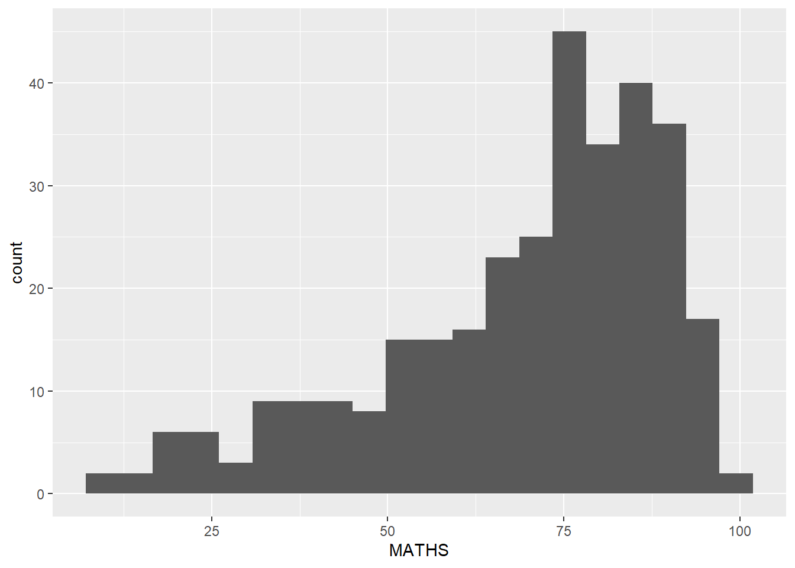

pacman::p_load(tidyverse)In-class Exercise 01
1 Getting Started
1.1 Install and Launch R Packages
1.2 Import Data
exam_data <- read_csv('data/Exam_data.csv')We will now examine the data further.
head(exam_data)# A tibble: 6 × 7
ID CLASS GENDER RACE ENGLISH MATHS SCIENCE
<chr> <chr> <chr> <chr> <dbl> <dbl> <dbl>
1 Student321 3I Male Malay 21 9 15
2 Student305 3I Female Malay 24 22 16
3 Student289 3H Male Chinese 26 16 16
4 Student227 3F Male Chinese 27 77 31
5 Student318 3I Male Malay 27 11 25
6 Student306 3I Female Malay 31 16 16str(exam_data)spc_tbl_ [322 × 7] (S3: spec_tbl_df/tbl_df/tbl/data.frame)
$ ID : chr [1:322] "Student321" "Student305" "Student289" "Student227" ...
$ CLASS : chr [1:322] "3I" "3I" "3H" "3F" ...
$ GENDER : chr [1:322] "Male" "Female" "Male" "Male" ...
$ RACE : chr [1:322] "Malay" "Malay" "Chinese" "Chinese" ...
$ ENGLISH: num [1:322] 21 24 26 27 27 31 31 31 33 34 ...
$ MATHS : num [1:322] 9 22 16 77 11 16 21 18 19 49 ...
$ SCIENCE: num [1:322] 15 16 16 31 25 16 25 27 15 37 ...
- attr(*, "spec")=
.. cols(
.. ID = col_character(),
.. CLASS = col_character(),
.. GENDER = col_character(),
.. RACE = col_character(),
.. ENGLISH = col_double(),
.. MATHS = col_double(),
.. SCIENCE = col_double()
.. )
- attr(*, "problems")=<externalptr> The variables CLASS, GENDER and RACE are currently character data format. We will change them to factor.
exam_data$CLASS <- as.factor(exam_data$CLASS)
exam_data$GENDER <- as.factor(exam_data$GENDER)
exam_data$RACE <- as.factor(exam_data$RACE)2 Plotting Exercises
2.1 Exercise 1
We can beautify the chart by adjusting the theme.
ggplot(data=exam_data, aes(x=RACE)) +
geom_bar()
Below is an example of how we can adjust the theme of the chart. Here, we will change the colours of plot panel background to light blue and the colour of grid lines to white.
For more information on adjusting the theme, refer here.
ggplot(data=exam_data, aes(x=RACE)) +
geom_bar() +
coord_flip() +
theme_minimal() +
theme(
panel.background = element_rect(fill='lightblue', colour='lightblue',
size=0.5, linetype='solid'),
panel.grid.major = element_line(size=0.5, linetype='solid', colour='white'),
panel.grid.minor = element_line(size=0.5, linetype='solid', colour='white'))2.2 Exercise 2
In the original chart, there are the following issues:
- y-axis label is not clear (i.e., count)
- To support effective comparison, the bars should be sorted by their respective frequency
- For static graph, frequency values should be added to provide additional information
ggplot(data=exam_data, aes(x=RACE)) +
geom_bar()
Below is the makeover of the chart. There are a few ways to plot the same chart.
Alternative 1 - Processing before plotting
- We need to include
stat='identity', which is basically telling ggplot2 you will provide the y-values for the barplot, rather than counting the aggregate number of rows for each x value, which is the defaultstat=count
exam_data %>%
group_by(RACE) %>%
summarise(count=n()) %>%
mutate(pct = round((count/sum(count))*100,1)) %>% # we can also use prop.table(count) to get pct
# if we do an arrange(desc(count)) before ggplot, there is no need for reorder below
ggplot(aes(x=reorder(RACE, desc(count)), y=count)) +
geom_bar(stat='identity') +
ylim(0,220) +
labs(x='Race', y='No. of\nPupils') +
geom_text(aes(label=paste0(count, ', ', pct, '%'), vjust = -0.5)) +
theme(axis.title.y=element_text(angle=0))
Alternative 2 - Processing during plotting
ggplot(data=exam_data,
aes(x=reorder(RACE,RACE, function(x) -length(x)))) + # if ascending order remove minus
geom_bar() +
ylim(0,220) +
labs(x='Race', y='No. of\nPupils') +
geom_text(stat='count',
aes(label=paste0(after_stat(count), ', ',
round(after_stat(count)/
sum(after_stat(count))*100, 1), '%')),
vjust=-0.5) +
theme(axis.title.y=element_text(angle=0))Alternative 3 - Using forcats package
library(forcats)
ggplot(data=exam_data,
# for ascending order use fct_rev(fct_infreq(RACE))
aes(x = fct_infreq(RACE))) +
geom_bar() +
ylim(0,220) +
labs(x='Race', y='No. of\nPupils') +
geom_text(stat='count',
aes(label=paste0(after_stat(count), ', ',
round(after_stat(count)/
sum(after_stat(count))*100, 1), '%')),
vjust=-0.5) +
theme(axis.title.y=element_text(angle=0))
2.3 Exercise 3
ggplot(data=exam_data,
aes(x=MATHS)) +
geom_histogram(bins=20)
We will improve the design with the following:
- Adding mean and median lines on the histogram plot
- Change fill colour and line colour
ggplot(data=exam_data,
aes(x=MATHS)) +
geom_histogram(bins=20, color='black', fill='lightblue') +
geom_vline(xintercept=mean(exam_data$MATHS, na.rm=T),
color='red', linetype='dashed', size=1) +
geom_vline(xintercept=median(exam_data$MATHS, na.rm=T),
color='blue', linetype='dashed', size=1)2.4 Exercise 4
The below histograms are not informative. This is because they only reveal the distribution of English scores by gender but without context such as all pupils.
ggplot(data=exam_data,
aes(x=ENGLISH)) +
geom_histogram() +
facet_wrap(~ GENDER)
We will create a makeover as shown below. The background histograms show the distribution of English scores of all pupils.
exam_data_wo_gender <- exam_data[,-3] # remove column 3
ggplot(data=exam_data,
aes(x=ENGLISH, fill=GENDER)) +
# first hist plots the background, second hist plots the foreground
geom_histogram(data=exam_data_wo_gender, fill='grey', alpha=0.5) +
geom_histogram(colour='black') +
facet_grid(~ GENDER) +
guides(fill=FALSE) + # removes the legend
theme_bw()2.5 Exercise 5
The original chart shows minimal information.
ggplot(data=exam_data, aes(x=MATHS, y=ENGLISH)) +
geom_point()
We will improve the design with the following:
- Changing to equal axis
- Including guides to inform where the passing grades are
ggplot(data=exam_data,
aes(x=MATHS, y=ENGLISH)) +
geom_point() +
coord_cartesian(xlim=c(0,100), ylim=c(0,100)) +
geom_vline(xintercept=50, linetype='dashed', colour='grey60',
size=1.5, alpha=0.8) +
geom_hline(yintercept=50, linetype='dashed', colour='grey60',
size=1.5, alpha=0.8) +
theme(aspect.ratio=1) # enables plot to be square-shaped